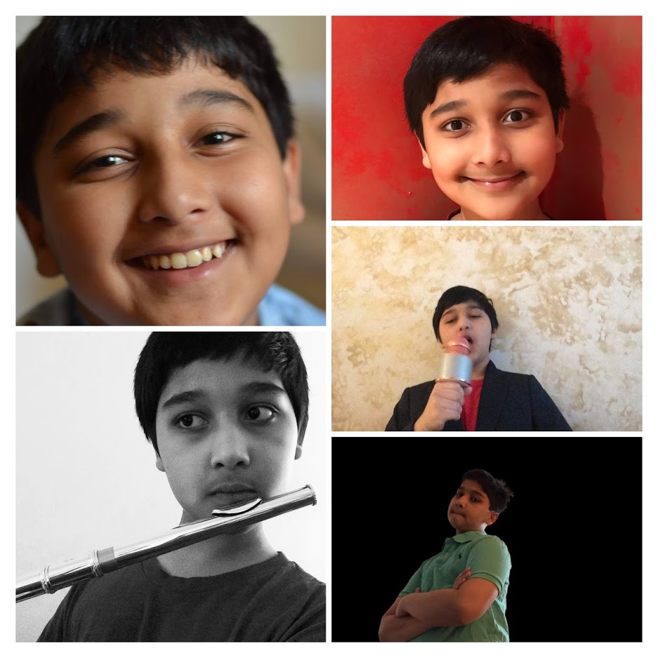

Hello, my name is Madhavendra Thakur
Read on to learn more about me, 12 year old founder of Poetific.

I am a World Citizen
Born in Mumbai, India, I moved to New York City at the ripe age of 5 which let me see two parts of the world through many lenses, it broadened my horizons and let me become a world citizen. Now, my poetry
is a fusion of East and West, drawing from my unique sight upon our world.
I am a Word Nerd
My poetic journey started in second grade, in the school talent show where I had written and recited three original poems. After that,
I added word hoarding to my voracious reading practice. Soon, I viewed the world through a poets mind and learned even more new words, terms, phrases and the
like until in 5th grade it became a hobby no more when I got accepted into the Scripps National Spelling bee and eventually finished in 51st place.
I Love Programming
It started in Kindergarten, when I first encountered the editor through BASIC, a simple programming language. Soon, however I graduated into the daunting world of Python and in 2nd grade, I used
a motor control library accompanied by a Raspberry Pi to build a wall sensing robot. After that, I learned Web Development in 4th grade and succeeded to create a tourism website for people my age coming to
visit NYC. Soon following, I only deepened my knowledge of Python by creating a plethora of mathematical tools using Python. I did everything from a fibbonacci number finder to a rudimentary calculator
function to a prime number test. Now, after returning to web development, I created Poetific fully from scratch as a dual project in publishing my poetry and applying my programming skills.